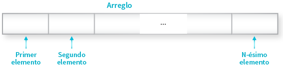
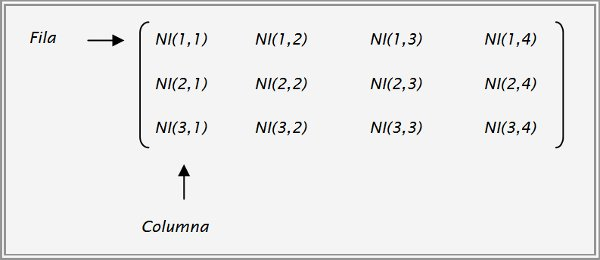

El siguiente cuaderno virtual esta destinado a servir como un compendio de los ejercicios vistos en clase, asi como los que fueron encargados como asignación de aprendizaje.
Estructura de Datos - Ciclo IV
Docente: Ethel J. Manzano Lozano
Alumno: James Noria Velarde adipiscing elit.
Las estructuras de datos son un medio para manejar grandes cantidades de datos de manera eficiente para usos tales como grandes bases de datos y servicios de indización de Internet. Por lo general, las estructuras de datos eficientes son clave para diseñar algoritmos eficientes.
Esta página web esta construida con Javascript, HTML and CSS.
El código mostrado aquí esta alojado en el siguiente repositorio:
Github Repository
© James Noria | 2022
Un arreglo se define como una colección finita, homogénea y ordenada de elementos como se ha definido antes pero se caracteriza por ser unidimensional porque tiene una solo dimensión como se muestra a continuación. Un arreglo tiene la característica de que puede almacenar a N elementos del mismo tipo y además permite el acceso a cada uno de estos elementos. Se distinguen dos partes en los arreglos:

Los arreglos bidimensionales son tablas de valores. Cada elemento de un arreglo bidimensional está simultáneamente en una fila y en una columna. En matemáticas, a los arreglos bidimensionales se les llama matrices, y son muy utilizados en problemas de Ingeniería. En un arreglo bidimensional, cada elemento tiene una posición que se identifica mediante dos índices: el de su fila y el de su columna.
